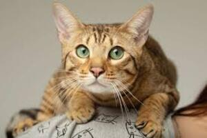

Um gatinho de olhos verdes e pelagem amarelada é simplesmente adorável! A combinação de olhos verdes com uma pelagem amarelada cria um visual cativante e caloroso. Gatos com essa aparência muitas vezes têm um ar acolhedor e encantador. Tenho certeza de que quem adotar esse gatinho estará levando para casa um companheiro afetuoso e cheio de personalidade. Desejo muitas alegrias para quem decidir dar um lar para esse gatinho tão especial!

voltar para principal